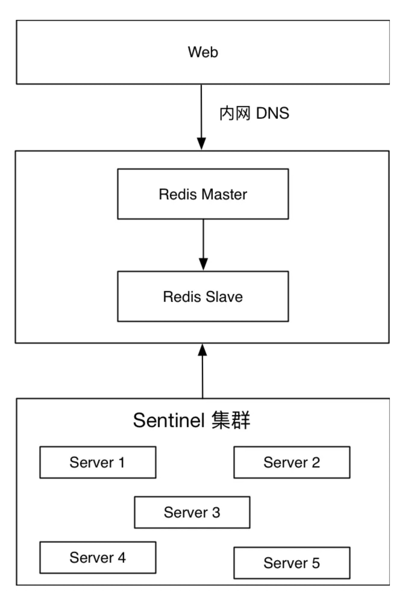
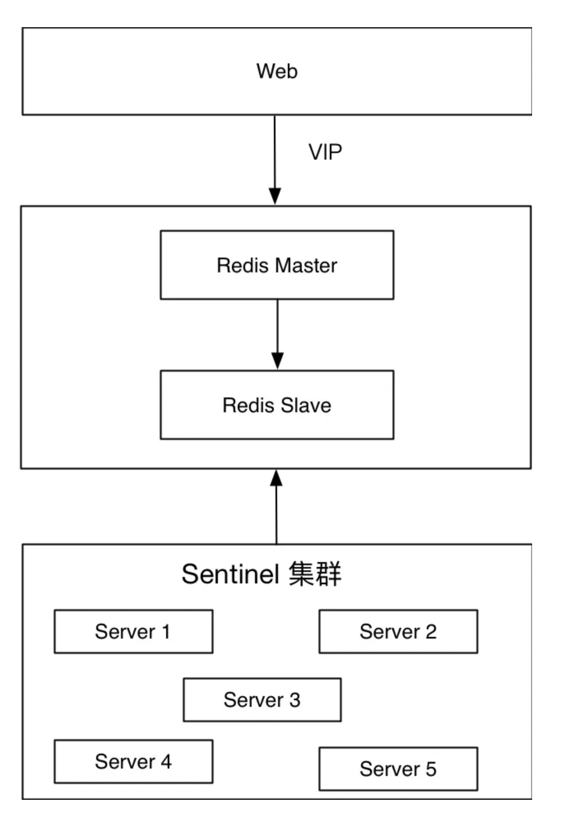
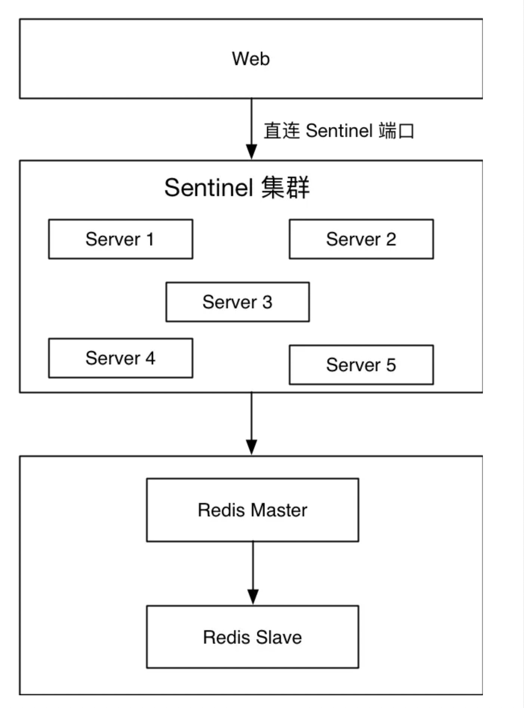
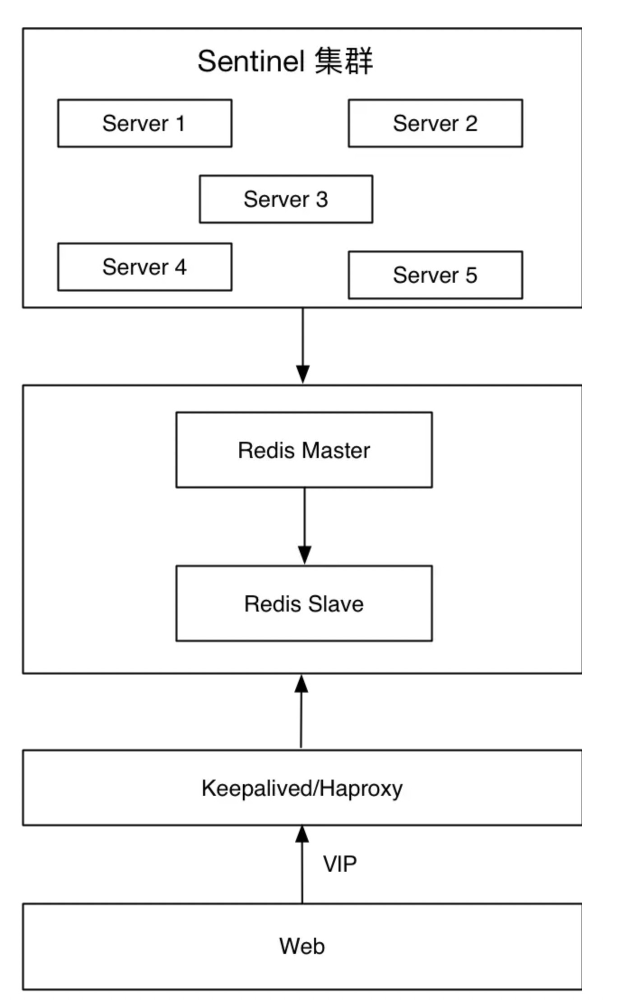
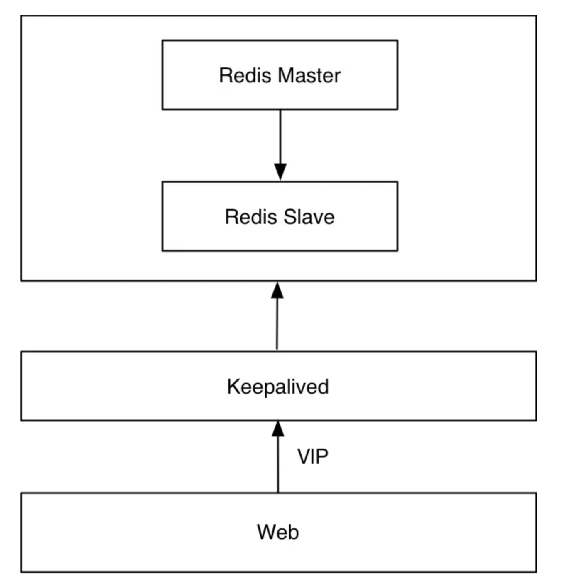
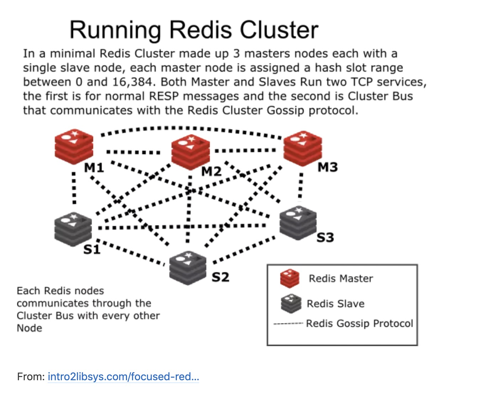
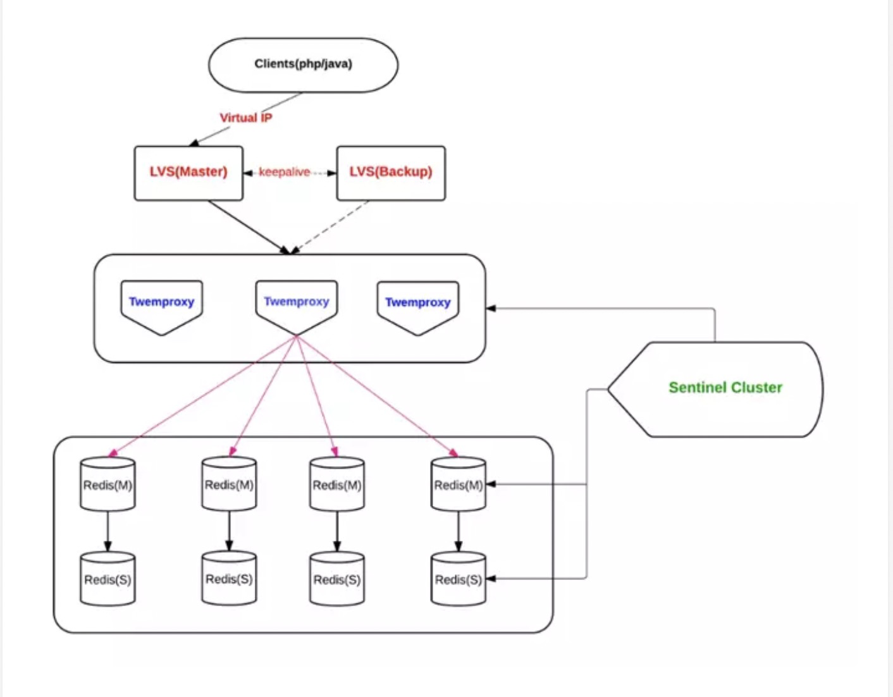
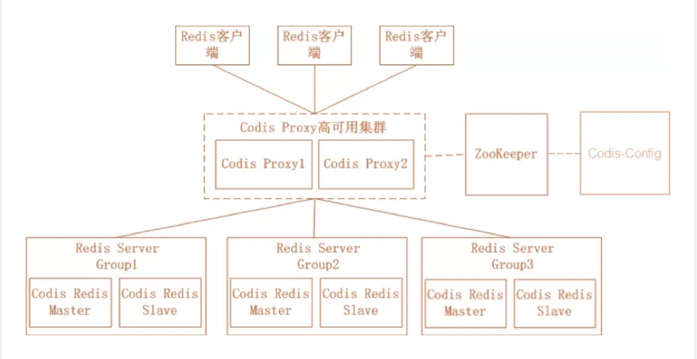

Redis 001高可用最佳实践
1、前言
2017 年 5 月 13 日，应用性能管理大讲堂广州站圆满落幕，其中来自三七互娱的 DBA 温国兵在会场与各位进行了精彩的 Redis 技术分享。
Redis 是一个开源的使用 ANSI C 语言编写、支持网络、可基于内存亦可持久化的日志型、Key-Value 数据库，并提供多种语言的 API。
如今，互联网业务的数据正以更快的速度在增长，数据类型越来越丰富，这对数据处理的速度和能力提出了更高要求。Redis 是一种开源的内存非关系型数据库，给开发人员带来的体验是颠覆性的。在自始至终的设计过程中，都充分考虑高性能，这使得 Redis 成为当今速度最快的 NoSQL 数据库。
考虑高性能的同时，高可用也是很重要的考虑因素。互联网 7x24 无间断服务，在故障期间以最快的速度 Failover，能给企业带来最小的损失。
那么，在实际应用中，都有哪些高可用架构呢？架构之间有何优劣？我们应该怎么取舍？有哪些最佳实践？
2、Sentinel 原理
在讲解 Redis 高可用方案之前，我们先来看看 Redis Sentinel 原理是怎么样的。
-
Sentinel 集群通过给定的配置文件发现 master，启动时会监控 master。通过向 master 发送 info 信息获得该服务器下面的所有从服务器。
-
Sentinel 集群通过命令连接向被监视的主从服务器发送 hello 信息 (每秒一次)，该信息包括 Sentinel 本身的 IP、端口、id 等内容，以此来向其他 Sentinel 宣告自己的存在。
-
Sentinel 集群通过订阅连接接收其他 Sentinel 发送的 hello 信息，以此来发现监视同一个主服务器的其他 Sentinel；集群之间会互相创建命令连接用于通信，因为已经有主从服务器作为发送和接收 hello 信息的中介，Sentinel 之间不会创建订阅连接。
-
Sentinel 集群使用 ping 命令来检测实例的状态，如果在指定的时间内（down-after-milliseconds）没有回复或则返回错误的回复，那么该实例被判为下线。
-
当 failover 主备切换被触发后，failover 并不会马上进行，还需要 Sentinel 中的大多数 Sentinel 授权后才可以进行 failover，即进行 failover 的 Sentinel 会去获得指定 quorum 个的 Sentinel 的授权，成功后进入 ODOWN 状态。如在 5 个 Sentinel 中配置了 2 个 quorum，等到 2 个 Sentinel 认为 master 死了就执行 failover。
-
Sentinel 向选为 master 的 slave 发送 SLAVEOF NO ONE 命令，选择 slave 的条件是 Sentinel 首先会根据 slaves 的优先级来进行排序，优先级越小排名越靠前。如果优先级相同，则查看复制的下标，哪个从 master 接收的复制数据多，哪个就靠前。如果优先级和下标都相同，就选择进程 ID 较小的。
-
Sentinel 被授权后，它将会获得宕掉的 master 的一份最新配置版本号 (config-epoch)，当 failover 执行结束以后，这个版本号将会被用于最新的配置，通过广播形式通知其它 Sentinel，其它的 Sentinel 则更新对应 master 的配置。
其中：
1 到 3 是自动发现机制:
以 10 秒一次的频率，向被监视的 master 发送 info 命令，根据回复获取 master 当前信息。
以 1 秒一次的频率，向所有 redis 服务器、包含 Sentinel 在内发送 PING 命令，通过回复判断服务器是否在线。
以 2 秒一次的频率，通过向所有被监视的 master，slave 服务器发送当前 Sentinel master 信息的消息。
4 是检测机制，
5 和 6 是 failover 机制，
7 是更新配置机制。[1]
3、Redis 高可用架构
讲解完 Redis Sentinel 原理之后，接下来讲解常用的 Redis 高可用架构。
- Redis Sentinel 集群 + 内网 DNS + 自定义脚本
- Redis Sentinel 集群 + VIP + 自定义脚本
- 封装客户端直连 Redis Sentinel 端口
- JedisSentinelPool，适合 Java
- PHP 基于 phpredis 自行封装
- Redis Sentinel 集群 + Keepalived/Haproxy
- Redis M/S + Keepalived
- Redis Cluster
- Twemproxy
- Codis
- Tendis
3.1 Redis Sentinel 集群 + 内网 DNS + 自定义脚本

上图是已经在线上环境应用的方案。底层是 Redis Sentinel 集群，代理着 Redis 主从，Web 端连接内网 DNS 提供服务。内网 DNS 按照一定的规则分配，比如 xxxx.redis.cache/queue.port.xxx.xxx，
第一个段表示业务简写，第二个段表示这是 Redis 内网域名，第三个段表示 Redis 类型，cache 表示缓存，queue 表示队列，第四个段表示 Redis 端口，第五、第六个段表示内网主域名。
当主节点发生故障，比如机器故障、Redis 节点故障或者网络不可达，Sentinel 集群会调用 client-reconfig-script 配置的脚本，修改对应端口的内网域名。对应端口的内网域名指向新的 Redis 主节点。
优点：
- 秒级切换，在 10s 内完成整个切换操作
- 脚本自定义，架构可控
- 对应用透明，前端不用担心后端发生什么变化
缺点：
- 维护成本略高，Redis Sentinel 集群建议投入 3 台机器以上
- 依赖 DNS，存在解析延时
- Sentinel 模式存在短时间的服务不可用
- 服务通过外网访问不可采用此方案
3.2 Redis Sentinel 集群 + VIP + 自定义脚本

此方案和上一个方案相比，略有不同。第一个方案使用了内网 DNS，第二个方案把内网 DNS 换成了虚拟 IP。底层是 Redis Sentinel 集群，代理着 Redis 主从，Web 端通过 VIP 提供服务。
在部署 Redis 主从的时候，需要将虚拟 IP 绑定到当前的 Redis 主节点。当主节点发生故障，比如机器故障、Redis 节点故障或者网络不可达，Sentinel 集群会调用 client-reconfig-script 配置的脚本，将 VIP 漂移到新的主节点上。
优点：
- 秒级切换，在 5s 内完成整个切换操作
- 脚本自定义，架构可控
- 对应用透明，前端不用担心后端发生什么变化
缺点：
- 维护成本略高，Redis Sentinel 集群建议投入 3 台机器以上
- 使用 VIP 增加维护成本，存在 IP 混乱风险
- Sentinel 模式存在短时间的服务不可用
3.3 封装客户端直连 Redis Sentinel 端口

部分业务只能通过外网访问 Redis，上述两种方案均不可用，于是衍生出了这种方案。Web 使用客户端连接其中一台 Redis Sentinel 集群中的一台机器的某个端口，然后通过这个端口获取到当前的主节点， 然后再连接到真实的 Redis 主节点进行相应的业务员操作。需要注意的是，Redis Sentinel 端口和 Redis 主节点均需要开放访问权限。如果前端业务使用 Java，有 JedisSentinelPool 可以复用；如果前端业务使用 PHP，可以在 phpredis 的基础上做二次封装。
优点：
- 服务探测故障及时
- DBA 维护成本低
缺点：
- 依赖客户端支持 Sentinel
- Sentinel 服务器和 Redis 节点需要开放访问权限
- 对应用有侵入性
3.4 Redis Sentinel 集群 + Keepalived/Haproxy

底层是 Redis Sentinel 集群，代理着 Redis 主从，Web 端通过 VIP 提供服务。当主节点发生故障，比如机器故障、Redis 节点故障或者网络不可达，Redis 之间的切换通过 Redis Sentinel 内部机制保障，VIP 切换通过 Keepalived 保障。
优点：
- 秒级切换
- 对应用透明
缺点：
- 维护成本高
- 存在脑裂
- Sentinel 模式存在短时间的服务不可用
3.5 Redis M/S + Keepalived

此方案没有使用到 Redis Sentinel。此方案使用了原生的主从和 Keepalived，VIP 切换通过 Keepalived 保障，Redis 主从之间的切换需要自定义脚本实现。
优点：
- 秒级切换
- 对应用透明
- 部署简单，维护成本低
缺点：
- 需要脚本实现切换功能
- 存在脑裂
3.6 Redis Cluster

Redis 3.0.0 在 2015 年 4 月 2 日正式发布，距今已有两年多的时间。Redis 集群采用 P2P 模式，无中心化。把 key 分成 16384 个 slot，每个实例负责一部分 slot。客户端请求对应的数据， 若该实例 slot 没有对应的数据，该实例会转发给对应的实例。另外，Redis 集群通过 Gossip 协议同步节点信息。
优点：
- 组件 all-in-box，部署简单，节约机器资源
- 性能比 proxy 模式好
- 自动故障转移、Slot 迁移中数据可用
- 官方原生集群方案，更新与支持有保障
缺点：
- 架构比较新，最佳实践较少
- 多键操作支持有限（驱动可以曲线救国）
- 为了性能提升，客户端需要缓存路由表信息
- 节点发现、reshard 操作不够自动化
3.7 Twemproxy

多个同构 Twemproxy（配置相同）同时工作，接受客户端的请求，根据 hash 算法，转发给对应的 Redis。 Twemproxy 方案比较成熟了，之前我们团队长期使用此方案，但是效果并不是很理想。一方面是定位问题比较困难，另一方面是它对自动剔除节点的支持不是很友好。
优点：
- 开发简单，对应用几乎透明
- 历史悠久，方案成熟
缺点：
- 代理影响性能
- LVS 和 Twemproxy 会有节点性能瓶颈
- Redis 扩容非常麻烦
- Twitter 内部已放弃使用该方案，新使用的架构未开源
3.8 Codis

Codis 是由豌豆荚开源的产品，涉及组件众多，其中 ZooKeeper 存放路由表和代理节点元数据、分发 Codis-Config 的命令；Codis-Config 是集成管理工具，有 Web 界面供使用； Codis-Proxy 是一个兼容 Redis 协议的无状态代理；Codis-Redis 基于 Redis 2.8 版本二次开发，加入 slot 支持，方便迁移数据。
优点：
- 开发简单，对应用几乎透明
- 性能比 Twemproxy 好
- 有图形化界面，扩容容易，运维方便
缺点：
- 代理依旧影响性能
- 组件过多，需要很多机器资源
- 修改了 Redis 代码，导致和官方无法同步，新特性跟进缓慢
- 开发团队准备主推基于 Redis 改造的 reborndb
4.最佳实践
所谓的最佳实践，都是最适合具体场景的实践。
主推以下方案：
- Redis Sentinel 集群 + 内网 DNS + 自定义脚本
- Redis Sentinel 集群 + VIP + 自定义脚本
以下是实战过程中总结出的最佳实践：
- Redis Sentinel 集群建议使用 >= 5 台机器
- 不同的大业务可以使用一套 Redis Sentinel 集群，代理该业务下的所有端口
- 根据不同的业务划分好 Redis 端口范围
- 自定义脚本建议采用 Python 实现，扩展便利
- 自定义脚本需要注意判断当前的 Sentinel 角色
- 自定义脚本传入参数：<service_name> <from_ip> <from_port> <to_ip> <to_port>
- 自定义脚本需要远程 ssh 操作机器，建议使用 paramiko 库，避免重复建立 SSH 连接，消耗时间
- 加速 SSH 连接，建议关闭以下两个参数
- UseDNS no
- GSSAPIAuthentication no
- 微信或者邮件告警，建议 fork 一个进程，避免主进程阻塞
- 自动切换和故障切换，所有操作建议在 15s 以内完成